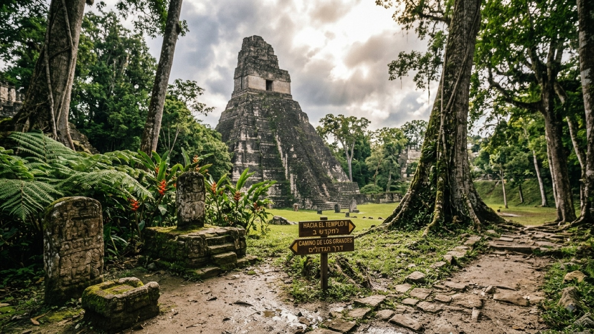

טיול בגואטמלה 2026 — המדריך המלא

גואטמלה היא המדינה שהכי קשה לעזוב. היא קטנה — אפשר לחצות אותה בשמונה שעות נסיעה — אבל דחוסה בעוצמה שקשה למצוא במקום אחר: הרי געש שמתפרצים ממש מול העיניים, אגם שיושב בתוך לוע של הר געש כבוי, פירמידות מאיה שמבצבצות מעל חופת הג׳ונגל, ותרבות ילידית שלא הפכה לאטרקציה תיירותית אלא פשוט ממשיכה להתקיים.
בשביל מטיילים ישראלים גואטמלה היא בדרך כלל התחנה השנייה או השלישית בגל היורד, מיד אחרי מקסיקו. היא זולה, המרחקים קצרים, ורוב המטיילים מגלים שהתכנון המקורי של חמישה ימים הפך לשלושה שבועות. המדריך הזה מרכז את כל מה שצריך לדעת לפני שיוצאים.
מתי כדאי לנסוע לגואטמלה?
לגואטמלה שתי עונות ברורות, וההבדל ביניהן משמעותי בעיקר אם אתם מתכננים טרקים.
העונה היבשה (נובמבר–אפריל) היא שיא העונה. שמיים בהירים, סיכוי גבוה לראות את התפרצויות הפואגו מטרק אקטננגו, ושבילים יבשים. החיסרון: יותר מטיילים, מחירים גבוהים יותר, וצורך להזמין מראש בעונות השיא של דצמבר–ינואר ושל השבוע הקדוש לפני הפסחא (Semana Santa), שהוא האירוע הגדול של אנטיגואה.
עונת הגשמים (מאי–אוקטובר) נשמעת מרתיעה יותר משהיא. ברוב החודשים הגשם יורד בשעות אחר הצהריים והערב, ובוקר אחרי בוקר מתגלה שמיים כחולים. הנוף ירוק לאין שיעור, ההוסטלים זולים ופנויים, ואגם אטיטלן במיטבו. ספטמבר ואוקטובר הם החודשים הגשומים ביותר, ובהם גם הסיכון הגבוה ביותר להצפות ולחסימות כבישים.
ויזה, כניסה ומעברי גבול
בעלי דרכון ישראלי לא צריכים ויזה מראש ומקבלים 90 יום בכניסה. הדרכון צריך להיות בתוקף לפחות שישה חודשים.
הנקודה החשובה שרוב המטיילים מפספסים: גואטמלה חתומה על הסכם CA-4 יחד עם הונדורס, אל סלבדור וניקרגואה. ארבע המדינות מתייחסות לתשעים הימים כמכסה משותפת — כלומר מעבר מגואטמלה להונדורס ובחזרה לא מאפס את הספירה. אם אתם מתכננים לשוטט במרכז אמריקה כמה חודשים, זה שיקול תכנון מרכזי: כדי לאפס את המונה צריך לצאת למדינה שמחוץ להסכם, כמו מקסיקו, בליז או קוסטה ריקה.
מעברי הגבול המרכזיים:
- למקסיקו: לה מסייה (La Mesilla) לכיוון סן קריסטובל; אל סייבו (El Ceibo) לכיוון פלנקה; ובתל (Bethel) — מעבר בסירה על נהר אוסומסינטה, איטי ויקר יותר אבל יפהפה.
- לבליז: מלצ׳ור דה מנקוס (Melchor de Mencos), קרוב לפלורס ולטיקאל.
- להונדורס: אל פלורידו (El Florido), המעבר הנוח לקופאן רואינאס.
- לאל סלבדור: כמה מעברים, הפופולרי הוא לכיוון סנטה אנה.
כמה עולה טיול בגואטמלה?
גואטמלה היא מהמדינות הזולות במרכז אמריקה — בסדר גודל דומה לניקרגואה וזולה משמעותית מקוסטה ריקה או מפנמה. המטבע הוא קצאל (Quetzal, GTQ), ושער החליפין נע סביב 7.7 קצאל לדולר.
| הוצאה | מחיר משוער |
|---|---|
| מיטה בחדר משותף בהוסטל | 8–15$ (60–115 קצאל) |
| חדר פרטי בסיסי | 25–40$ |
| ארוחה בקומדור מקומי | 3–5$ (25–40 קצאל) |
| ארוחה במסעדה תיירותית | 8–15$ |
| נסיעה בצ׳יקן באס | 1–3$ |
| שאטל תיירים בין ערים | 12–25$ |
| טרק אקטננגו (לילה בהר, כולל ציוד) | 50–90$ |
| כניסה לטיקאל | כ-20$ (150 קצאל) |
| שבוע קורס ספרדית + מגורים במשפחה | 150–250$ |
שורה תחתונה: מטייל תרמילאי סביר מוציא 30–35 דולר ביום כולל לינה, אוכל ותחבורה, בלי אטרקציות גדולות. שבועיים בגואטמלה עם שני טרקים גדולים וכמה סיורים יסתכמו בסביבות 700–900 דולר לאדם.
איך מתניידים בגואטמלה?
יש שתי דרכים לנוע בגואטמלה, וההבדל ביניהן הוא בדיוק ההבדל בין חוויה לנוחות.
צ׳יקן באס (Chicken Bus) — אוטובוסי בית ספר אמריקאיים מיושנים שנצבעו בצבעי ניאון, נדחסים מעבר לקיבולת ונוסעים בכבישי הרים מפותלים במהירות מפוקפקת. הם זולים להפליא, מגיעים לכל מקום, וזו אחת החוויות הגואטמלטיות האותנטיות ביותר. פחות מומלצים לנסיעות לילה או עם ציוד יקר.
שאטל תיירים — מיניוואנים שיוצאים בשעות קבועות בין נקודות המסלול העיקריות. יקרים פי חמישה עד עשרה, אך נוחים, אוספים מההוסטל ולעיתים קרובות מהירים יותר. לרוב זו הבחירה הנכונה לנסיעות ארוכות כמו אנטיגואה–לנקין או פלורס–סמוק שמפיי.
המסלול המומלץ — שבועיים בגואטמלה
המסלול הזה בנוי בכיוון הגל היורד (ממקסיקו דרומה), אבל עובד מצוין גם הפוך:
- ימים 1–3 · אנטיגואה — עיירה קולוניאלית מרוצפת אבן בין שלושה הרי געש. בסיס מצוין להתאקלמות, לקורס ספרדית או לטרקים.
- יום 4 · טרק אקטננגו — יציאה של יומיים עם לינה בהר, ומולכם, במרחק של קילומטרים ספורים, הר הגעש פואגו מתפרץ כל 20 דקות. אחת החוויות החזקות ביבשת.
- ימים 5–8 · אגם אטיטלן — אגם בתוך לוע געש, מוקף כפרי מאיה שכל אחד מהם באופי אחר: סן פדרו למסיבות, סן מרקוס ליוגה ומדיטציה, סנטה קרוז לשקט, סן חואן לאומנות מקומית ופחות תיירות.
- ימים 9–10 · סמוק שמפיי — בריכות טורקיז מדורגות מעל נהר תת-קרקעי, ליד הכפר לנקין. הנסיעה ארוכה ומטלטלת, והמקום שווה אותה.
- ימים 11–14 · פלורס וטיקאל — פלורס היא עיירת אי קטנה על אגם, ומשמשת בסיס לטיקאל: אתר המאיה המרשים ביבשת, שבו הפירמידות מזדקרות מעל חופת הג׳ונגל. שווה להגיע לזריחה.
יש עוד יומיים-שלושה? הוסיפו את אל פארדון — כפר גלישה על חוף חול שחור באוקיינוס השקט, שהפך בשנים האחרונות לתחנה קבועה, או את צ׳יצ׳יקסטננגו ביום חמישי או ראשון, כשמתקיים בו אחד השווקים הילידיים הגדולים ביבשת.
מה חובה לראות בגואטמלה?
ארבע החוויות שכמעט אף אחד לא מוותר עליהן:
- טרק אקטננגו — טיפוס ל-3,976 מטר ולינה מול הר געש פעיל. קר, קשה, ובלתי נשכח. ודאו שהחברה מספקת שק שינה איכותי וג׳קט; הפרש המחיר בין המפעילים משקף בדיוק את זה.
- אגם אטיטלן — הסופר אלדוס האקסלי כתב עליו שהוא היפה בעולם, וקשה לחלוק. התניידות בין הכפרים היא בסירות ציבוריות זולות.
- טיקאל — בירת ממלכת מאיה שננטשה ונבלעה בג׳ונגל. הכניסה המוקדמת לזריחה עולה תוספת ושווה אותה.
- סמוק שמפיי — שרשרת בריכות טורקיז טבעיות. אפשר לשלב עם סיור מערות בנרות.
בטיחות בגואטמלה — מה באמת צריך לדעת
לגואטמלה מוניטין בטיחותי מורכב, וכדאי להפריד בין הנתונים הארציים לבין מסלול התרמילאים בפועל. המסלול המרכזי — אנטיגואה, אטיטלן, לנקין, פלורס — עובר באזורים שחיים מתיירות, ויש בהם נוכחות קבועה של מטיילים. רוב הביקורים עוברים בלי תקרית.
הכללים שכן שווים הקפדה:
- לא להסתובב רגלית בשעות החשכה, בעיקר לא לבד ולא בגואטמלה סיטי.
- בגואטמלה סיטי — להזמין אובר או מונית דרך ההוסטל, לא לעצור מונית ברחוב.
- לא להציג טלפונים, מצלמות או תכשיטים בציבור ובאוטובוסים.
- להעדיף שאטלים על פני צ׳יקן באסים בנסיעות לילה ארוכות.
- לשמור עותק דיגיטלי של הדרכון, ולהשאיר את המקור בכספת ההוסטל כשאפשר.
נקודה בריאותית: אנטיגואה, אטיטלן וקצאלטננגו נמצאות בגובה, וכדאי לקחת יום התאקלמות לפני טרק גדול. מים — רק מבקבוק או מסונן.
שאלות נפוצות
כמה ימים צריך לגואטמלה?
שבועיים הם המינימום ההגיוני כדי לראות את אנטיגואה, אטיטלן, סמוק שמפיי וטיקאל בלי לרוץ. עם עשרה ימים תצטרכו לוותר על אחד מהם, בדרך כלל על סמוק שמפיי בגלל הנסיעה הארוכה. שלושה שבועות מאפשרים להוסיף קורס ספרדית, את חוף אל פארדון או אזורים פחות מתוירים.
האם כדאי ללמוד ספרדית בגואטמלה?
גואטמלה נחשבת לאחד המקומות הטובים והזולים בעולם ללימוד ספרדית. אנטיגואה וקצאלטננגו (שֶלָה) הן שתי בירות הקורסים, ושבוע של עשרים שעות שיעור פרטי כולל מגורים אצל משפחה מקומית עולה 150–250 דולר. רבים מהמטיילים משלבים שבוע כזה בתחילת הטיול ביבשת — ומרוויחים ממנו לאורך כל החודשים שאחריו.
האם אפשר לשלם בכרטיס אשראי?
בערים הגדולות ובעסקים תיירותיים כן, אך גואטמלה היא עדיין מדינה של מזומן. בשווקים, בקומדורים, בצ׳יקן באסים ובכפרי אטיטלן צריך קצאלים. כספומטים זמינים באנטיגואה, פנחצ׳ל, פלורס וקצאלטננגו, אך נדירים באזורים כפריים — משכו מראש לפני יציאה לסמוק שמפיי או לכפרים קטנים.
מה עם אינטרנט וסים?
כרטיס סים מקומי (Tigo או Claro) עולה כמה דולרים וזמין בשדה התעופה ובכל עיר. הכיסוי טוב במסלול המרכזי וחלש בג׳ונגל של פטן ובחלק מכפרי האגם. אפשרות נוחה יותר היא eSIM אזורי למרכז אמריקה, שחוסך החלפות בכל מעבר גבול.
האם ישראלים צריכים ויזה לגואטמלה?
לא. בעלי דרכון ישראלי מקבלים 90 יום בכניסה, ללא צורך בוויזה מראש. חשוב לדעת: גואטמלה חתומה על הסכם CA-4 יחד עם הונדורס, אל סלבדור וניקרגואה, כך שתשעים הימים מתחלקים בין כל ארבע המדינות ולא מתאפסים במעבר ביניהן.
כמה עולה טיול בגואטמלה ליום?
מטייל תרמילאי מוציא בממוצע 30 עד 35 דולר ביום: מיטה בהוסטל 8 עד 15 דולר, ארוחות בקומדור מקומי 3 עד 5 דולר, ונסיעות בצ'יקן באס 1 עד 3 דולר. גואטמלה נחשבת לאחת המדינות הזולות במרכז אמריקה. אטרקציות גדולות כמו טרק אקטננגו או טיקאל מוסיפות 50 עד 90 דולר לפעם.
מתי העונה הטובה ביותר לטייל בגואטמלה?
נובמבר עד אפריל היא העונה היבשה, ובה מזג האוויר הצפוי ביותר לטרקים ולצפייה בהרי געש. מאי עד אוקטובר היא עונת הגשמים, אך היא רחוקה מלהיות בלתי אפשרית: הגשם יורד בדרך כלל בשעות אחר הצהריים והערב, הנוף ירוק הרבה יותר והמחירים נמוכים. ספטמבר ואוקטובר הם החודשים הגשומים ביותר.
האם גואטמלה בטוחה למטיילים?
מסלול התרמילאים המרכזי, שכולל את אנטיגואה, אגם אטיטלן, פלורס וטיקאל, נחשב בטוח יחסית ועובר בו זרם קבוע של מטיילים. הכללים המקובלים: להימנע מטיולים רגליים בשעות החשכה, לא להציג ציוד יקר בציבור, להשתמש באובר או במוניות מוזמנות בגואטמלה סיטי במקום לעצור מונית ברחוב, ולהעדיף שאטלים על פני צ'יקן באסים לנסיעות לילה ארוכות.
גואטמלה היא לא מדינה שעוברים בה — היא מדינה שנתקעים בה. תכננו חמישה ימים, שריינו שבועיים.